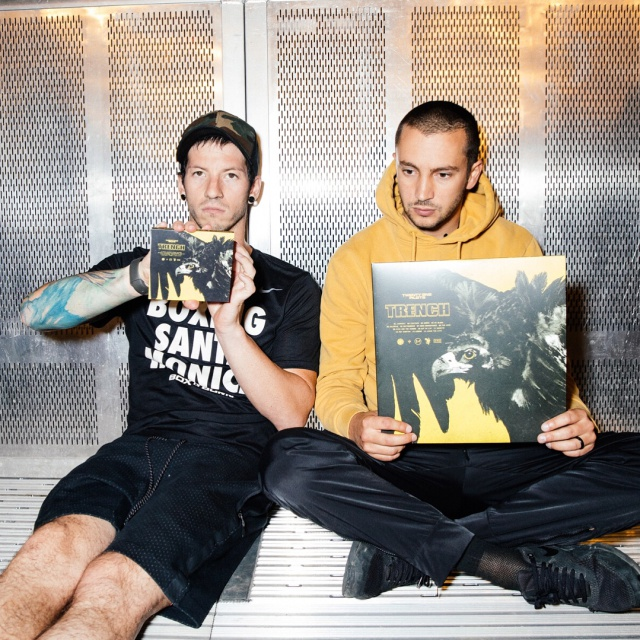
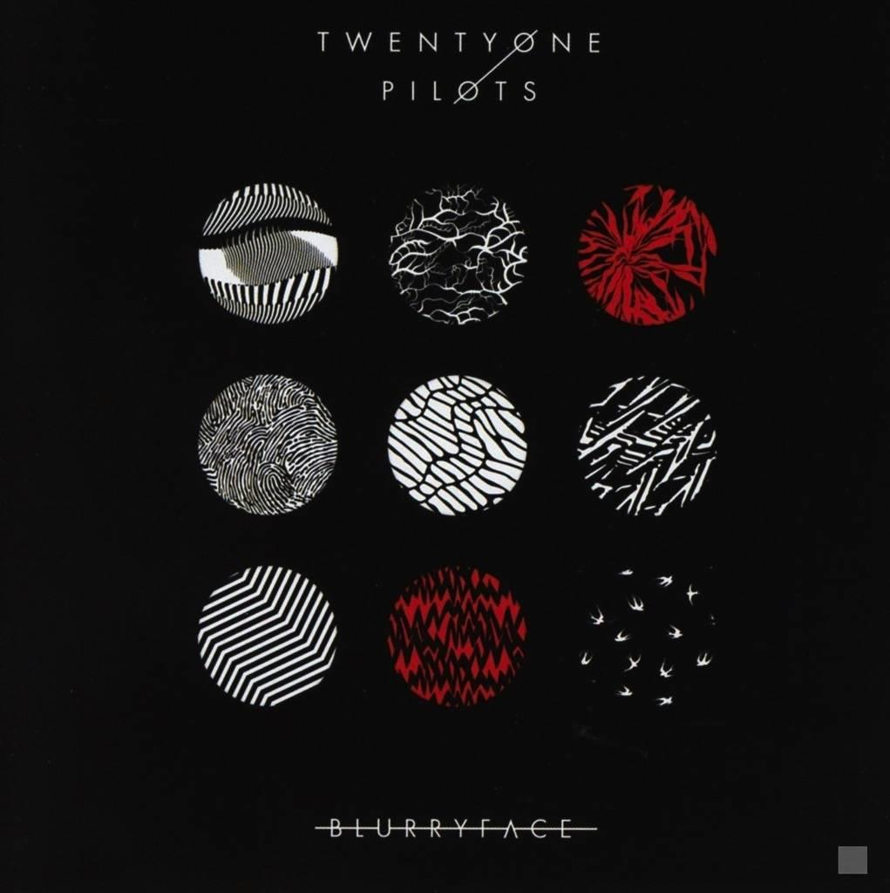

Sus inicios
Twenty One Pilots (2009) banda de rock alternativo. La banda se conformó en la localidad norteamericana de Columbus, Ohio. Todo empezó como una idea de unos jóvenes universitarios: Tyler Joseph, Nick Thomas y Chris Salih. El nombre de la banda fue asignado por Tyler quien se inspiró mientras leía el libro All My Sons de Arthur Miller, narra la historia de un padre de familia que vendía piezas incompletas para aviones durante la Segunda Guerra Mundial. Luego de varios meses de ensayos y búsqueda de patrocinadores y pequeños eventos que les sirvieran para ganar algo de dinero y reconocimiento, lograron a fines del 2009 lanzar su álbum debut-independiente titulado con el nombre de la banda y además comenzaron una gira en Ohio.
Al año siguiente y luego de ganar cierto reconocimiento y aceptación en el mundo de la música, la agrupación musical lanzó dos canciones inéditas de manera oficial a su cuenta en SoundCloud. Estas fueron Time to Say Goodbye, y una versión de Jar of Hearts de Christina Perri. En el año 2010 gozaron de una notable popularidad. Ahora bien, en el 2011 hubo ciertos cambios en la formación, Thomas y Salih abandonaron la banda por problemas de tiempo y Tyler decidió unirse con Josh Dun. Su despedida fue publicada en la página de Facebook oficial de la banda.
Al poco tiempo la banda logró firmar un contrato discográfico con Fueled by Ramen, con quien grabaron Regional at Best, lanzado el 8 de julio de 2011. Más adelante, ese mismo año ofrecieron un concierto en Columbus Newport Music Hall que permitió que la banda recobrara la atención de varias compañías discográficas. Luego de varias disertaciones, la banda se decidió por el sello de Atlantic Records subsidiada por Fueled by Ramen. Pronto, fueron publicadas dos canciones inéditas a través de su boletín de correo electrónico: la versión original de House of Gold y una canción llamada Two.

Al siguiente año, la banda lanzó el vídeo oficial en YouTube de la canción Goner. Este video tuvo rápidamente una gran cantidad de visualizaciones. Desde ese momento hasta el 2014 la banda realizó varias presentaciones, pequeñas giras, y se desarrollaron en algunas ocasiones como teloneros. Además, lanzaron su primer álbum extenso Vessel, debuto en televisión y Quiet Is Violent World Tour. Uno de los conciertos más importantes de esos años tuvo lugar en el Lifestyle Communities Pavilion. El 17 de julio de 2012, lanzaron su álbum debut en forma de EP con tres canciones, titulado Three Songs.

.jpeg)